무선설비산업기사 (2006-09-10 기출문제)
1과목: 디지털 전자회로
1. 다음 중 2진수 1110의 2의 보수는?
- 0010
- 0001
- 1111
- 1101
(정답률: 알수없음)

2. 다음 게이트 중 두 입력이 1과 0일 때 1의 출력이 나오지 않는 것은?
- OR 게이트
- EX-OR 게이트
- NAND 게이트
- NOR 게이트
(정답률: 알수없음)
3. 그림과 같은 발진회로에서 안정된 발진이 지속되기 위한 동조회로의 임피던스는 어떻게 되어야 하는가?
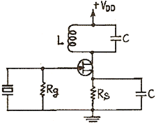
- 저항성
- 용량성
- 유도성
- 어느 경우든 상관없다.
(정답률: 알수없음)
4. 다음 변조방식 중에서 입력신호의 크기에 따라 펄스의 위치만을 변화시키는 변조방식은?
- PWM
- PPM
- PCM
- PAM
(정답률: 알수없음)
5. 그림의 회로에서 스위치가 t=0일 때, 1에서 2의 위치로 갑자기 옮겨졌다. 이 때 흐르는 전류는?
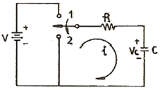
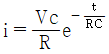
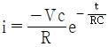
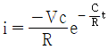
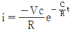
(정답률: 알수없음)
6. 3개의 T 플립플롭이 직렬로 연결되어 있다. 입력단(첫단)에 1000[Hz]의 입력신호를 인가하면 마지막 플립플롭의 출력신호는 몇 [Hz]인가?
- 3000
- 333
- 167
- 125
(정답률: 50%)
7. 고주파 증폭회로에서 중화회로를 사용하는 주 목적은?
- 이득의 증가
- 주파수의 체배
- 자기발진의 방지
- 전력 효율의 증대
(정답률: 알수없음)
8. 다음 중 RC 필터 회로에서 리플 함유율을 작게 하려면?
- R을 작게 한다.
- C를 작게 한다.
- R, C를 모두 작게 한다.
- R과 C를 크게 한다.
(정답률: 알수없음)
9. 다음 중 연산 증폭기의 특성과 관련 없는 것은?
- 높은 이득
- 낮은 CMRR
- 높은 입력 임피던스
- 낮은 출력 임피던스
(정답률: 알수없음)
10. NOT, AND 및 EX-OR로 구성된 회로의 명칭은?
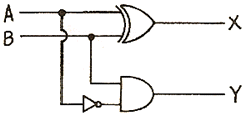
- 반가산기
- RS 플립플롭
- 전감산기
- 반감산기
(정답률: 알수없음)
11. 멀티 바이브레이터에 대한 설명 중 가장 관계없는 것은?
- 부궤환의 일종이다.
- 회로의 시정수로 주기가 결정된다.
- 고차의 고조파를 포함하고 있다.
- 전원전압이 변동해도 발진주파수에는 큰 변화 없다.
(정답률: 알수없음)
12. 다음 그림의 회로는 무슨 회로인가?
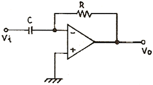
- 미분기
- 적분기
- 가산기
- 증폭기
(정답률: 알수없음)
13. 주된 맥동전압주파수가 전원주파수의 6배가 되는 정류 방식은?
- 단상전파전류
- 단상브리지전류
- 3상반파정류
- 3상전파정류
(정답률: 알수없음)
14. 에미터 플로워(emitter follower)의 임피던스 특성으로 옳은 것은?
- 입력임피던스와 출력임피던스 모두 작다.
- 입력임피던스와 출력임피던스 모두 크다.
- 입력임피던스는 크고 출력임피던스는 작다.
- 입력임피던스는 작고 출력임피던스는 크다.
(정답률: 알수없음)
15. 그림의 회로에서 R3, R4의 역할은 무엇인가?
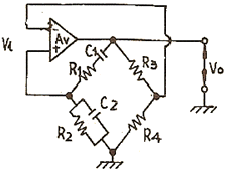
- 발진주파수를 결정한다.
- 증폭기의 이득을 안정시킨다.
- 발진파형을 톱니파로 만든다.
- 증폭기의 이득을 크게 한다.
(정답률: 알수없음)
16. 그림의 논리회로는 어떤 논리작용을 하는가?
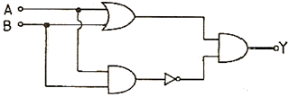
- AND
- OR
- NAND
- EX-OR
(정답률: 알수없음)
17. 다음 회로에서 Z1=10[kΩ], Z2=100[kΩ]일 때 전압 증폭도(Vo/Vi)는? (단, 연산 증폭기는 이상적인 것이다)
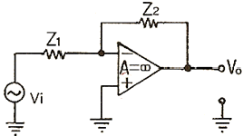
- -0.1
- -1
- -5
- -10
(정답률: 알수없음)
18. 슈미트 트리거 회로의 출력파형으로 옳은 것은?
- 삼각파
- 정현파
- 구형파
- 램프(ramp) 파형
(정답률: 알수없음)
19. A, B를 입력으로 하는 반가산기의 올림수(Carry) C에 대한 논리식으로 맞는 것은?
- C=A+B
- C=AB
- C=A⊕B
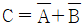
(정답률: 알수없음)
20. 그림 증폭회로의 전압이득 Av는 약 얼마인가) ?단, gm=10[m℧], RS=2[kΩ]이다.)
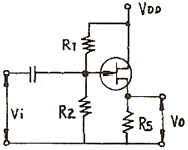
- 1
- 5
- 12
- 20
(정답률: 알수없음)
2과목: 무선통신 기기
21. M/W 중계방식 중 장해물 정상에 송ㆍ수신 안테나를 설치하거나 반사판을 설치하여 전파를 목적하는 방향으로 유도하는 방식은?
- 검파 중계방식
- 헤테로다인 중계방식
- 무급전 중계방식
- 직접 중계방식
(정답률: 알수없음)
22. AM 송신기의 RF 전력증폭기 기능으로 가장 옳은 것은?
- AM 변조기에서 신호파를 증폭한다.
- AM 변조기에서 반송파신호를 증폭한다.
- 필요한 RF 출력 전력을 얻기 위하여 이용된다.
- 부하의 변동이 발진기에 미치는 영향을 방지한다.
(정답률: 알수없음)
23. 다음 INMARSAT에 대한 설명 중 가장 적당한 것은?
- 일기예보를 정확히 하기 위한 기상관측 등을 주목적으로 한다.
- 지구관측을 통해 지상의 자원조사 및 탐사 등을 주목적으로 한다.
- 해상에서 선박 간의 정보교환과 해상안전에 관한 통신 등을 주목적으로 한다.
- 국제공중통신 역무를 주목적으로 한다.
(정답률: 알수없음)
24. 다음은 AM 수신기의 중간주파수를 낮게 선정하면 개선되는 것이다. 맞지 않은 것은?
- 영상주파수 관계 개선
- 근접 주파수 선택도 개선
- 이득 및 안정도 개선
- 단일조정을 쉽게 하기 위하여
(정답률: 알수없음)
25. AM 송신기의 조건으로 타당하지 않은 것은?
- 점유주파수 대폭이 가능한 최대일 것
- 발사전파의 주파수 안정도가 높을 것
- 전력증폭기 효율이 높을 것
- 출력전력의 변동이 없을 것
(정답률: 50%)
26. 다음 중 1,414km의 저 궤도 위성체(48기)를 이용하여 고품질의 통신서비스를 제공하는 이동통신시스템은?
- Iridium
- Odyssey
- Globalstar
- Inmarsat
(정답률: 알수없음)
27. 어떤 송신기에 의사 부하로서 10[Ω]의 무유도 저항을 접속하고 이 부하에 흐르는 전류를 고주파 전류계로 측정하였더니 7[A]이었다. 이 송신기의 출력은 몇 [W]인가?
- 70
- 128
- 490
- 700
(정답률: 알수없음)
28. 다음 중 IDC 회로를 사용하는 목적으로 가장 적합한 것은?
- 주파수 체배를 정확하게 하기 위하여
- 최대 주파수 편이가 규정치를 넘지 않게 하기 위하여
- 반송파 진폭을 일정하게 하여 주파수 편이를 좋게 하기 위하여
- 반송파 주파수를 일정하게 하기 위하여
(정답률: 알수없음)
29. 99.9[MHz]의 반송파를 최대주파수 편이 80[kHz]로 하고 20[kHz]의 신호파로 FM 변조 했을 경우의 변조지수(mf)와 주파수 대역폭(BW)은 각각 얼마인가?
- mf=4, BW=200kHz
- mf=6, BW=140kHz
- mf=8, BW=20kHz
- mf=10, BW=99.9kHz
(정답률: 알수없음)
30. 다음 중 AM 송신기의 변조파, 고조파 발사 강도, rltodq라진(parasitic oscillation) 등을 측정하기 위한 장비로 가장 적당한 것은?
- 싱크로스코프
- 오실로스코프
- 디지털카운터
- 스펙트럼분석기
(정답률: 알수없음)
31. 전파 정류 회로에서 맥동 전압을 나타낸 설명 중 옳은 것은) ?단, 평활 회로는 콘덴서 입력형임)
- 맥동 전압은 부하 저항 및 콘덴서 용량에 반비례한다.
- 맥동 전압은 부하 저항에 비례하고 콘덴서 용량에 반비례한다.
- 맥동 전압은 부하 저항 및 콘덴서 용량에 비례한다.
- 맥동 전압은 부하 저항에 반비례하고 콘덴서 용량에 비례한다.
(정답률: 알수없음)
32. SSB 점유 주파수 대역폭은 DSB에 비해 몇 배인가?
- 1/4배
- 1/2배
- 2배
- 4배
(정답률: 알수없음)
33. 통신위성에 관한 설명 중 틀린 것은?
- 정지궤도 위성은 지상 약 36,000km 상공에 위치하며 통신 커버리지(Coverage)는 지구표면의 약 40% 정도이다.
- 위성회선 중계시 보통 2~3백 ms 정도 전파 전송지연이 발생하는데 이것은 에코 캔슬러(Echo canceller)를 이용하여 제거할 수 있다.
- 통신위성은 고정위성, 이동위성으로 크게 분류할 수 있다.
- 위성통신은 주로 SHF 대의 주파수를 사용하며 Up-link와 Down-link는 서로 다른 주파수를 사용한다.
(정답률: 알수없음)
34. 어떤 송신기의 기본파 전압 이득이 40[dB], 제2고조파 성분이 20[dB]이었다. 왜율은?
- 1[%]
- 5[%]
- 10[%]
- 15[%]
(정답률: 알수없음)
35. 다음 중 2신호(실효) 선택도에 해당되지 않는 것은?
- 강도억압 효과
- 상호변조 특성
- 혼변조 특성
- 근접주파수 선택도
(정답률: 알수없음)
36. 다음 중 슈퍼헤테로다인 수신기에서 단일조정에 대한 설명으로 가장 적합한 것은?
- DAGC 회로를 부가시킨다.
- 반송파 주파수 변화에 관계없이 항상 중간주파수를 일정하게 얻도록 조정하는 것이다.
- AFC 장치를 한 것이다.
- 중간 주파수를 변화시키는 것이다.
(정답률: 알수없음)
37. 다음 중 무선 송신기에서 사용되지 않는 회로는?
- 완충 증폭회로
- 고주파 증폭회로
- 자동이득 조절회로
- 변조회로
(정답률: 알수없음)
38. 단상 반파 정류기가 1[kΩ]의 부하에 전력을 공급하고 있다. 정류기에 인가되는 교류 전압은 300[V]이고, 다이오드 저항은 100[Ω]이라 할 때 정류 효율은?
- 약 28.9[%]
- 약 33.8[%]
- 약 36.9[%]
- 약 39.4[%]
(정답률: 알수없음)
39. limiter 작용을 겸한 FM 검파기는?
- ratio - detector 형
- foster - seeley 형
- round - travis 형
- stagger 동조형
(정답률: 알수없음)
40. 무선수신기의 AGC 회로에서 CR의 값이 지나치게 크면 어떻게 되는가?
- 수신감도가 높아진다.
- 잡음이 작아진다.
- 빠른 주기의 페이딩(fading)에 따르지 못한다.
- 신호의 처음 부분만 동작한다.
(정답률: 알수없음)
3과목: 안테나 개론
41. 접지안테나의 복사저항은 40.6[Ω]이고, 접지저항이 4.4[Ω]일 때 이 안테나의 효율은 약 얼마인가?
- 10.8[%]
- 63.7[%]
- 75.4[%]
- 90.2[%]
(정답률: 알수없음)
42. 단파통신에 페이딩(Fading)에 대한 경감 방법으로 적합하지 않은 것은?
- 간섭성 페이딩은 공간 합성수신법을 사용한다.
- 편파성 페이딩은 편파 합성수신법을 사용한다.
- 흡수성 페이딩은 수신기에 AGC를 부가한다.
- 선택성 페이딩은 수신기에 AFC를 경감한다.
(정답률: 알수없음)
43. 단파대에서 제1종 감쇠의 설명으로 맞는 것은?
- E층의 전자밀도가 클수록, 주파수가 낮을수록 크다.
- E층의 전자밀도와 주파수가 클수록 크다.
- E층의 전자밀도와 주파수가 낮을수록 크다.
- E층의 전자밀도가 작을수록, 주파수가 클수록 크다.
(정답률: 알수없음)
44. 임계 주파수에 대한 설명 중 맞는 것은?
- MUF는 임계 주파수보다 낮다.
- D층의 임계 주파수는 E층의 임계 주파수보다 낮다.
- 임계 주파수는 전자 밀도에 반비례한다.
- 지상에서는 관측할 수 없다.
(정답률: 알수없음)
45. 전파에 관한 성질 중 맞지 않는 것은?
- 유전율이 커지면 파장이 길어진다.
- 전계 벡터가 X축 Y축으로 구성되어 그 크기가 같은 경우를 원편파라고 한다.
- 유도전계는 거리의 자승에 반비례하고, 복사전계는 거리에 반비례한다.
- 주파수가 낮을수록 회절현상이 잘 일어나고 높을수록 직진성이 강하다.
(정답률: 알수없음)
46. 다음 중 안테나에 사용되는 연장코일의 역할은?
- 낮은 주파수로 사용하기 위하여
- 지향성 안테나로 사용하기 위하여
- 낮은 출력으로 사용하기 위하여
- 짧은 파장에 공진시키기 위하여
(정답률: 알수없음)
47. 출력 100[kW]로써 방송되고 있는 라디오파가 안테나로부터 20[km] 떨어진 장송에서의 전계강도는 약 얼마인가? (단, 1[km] 떨어진 곳에서는 1.73[V/m]이다.)
- 0.086[V/m]
- 1.73 [V/m]
- 5.47 [V/m]
- 54.7 [V/m]
(정답률: 알수없음)
48. 통신 선로의 임피던스를 정합시키는 이유로 가장 적합한 것은?
- 부하에 전력을 최소로 공급하기 위해
- 반사계수를 1로 만들기 위해
- 투과계수를 0으로 만들기 위해
- 반사파가 생기지 않도록 하기 위해
(정답률: 알수없음)
49. 다음 중 부 반사기로 블록 타원체를 사용하고 있으며 위성 통신 지구국용 고이득 저잡음 안테나는?
- 패스렝스(path length) 안테나
- 카세그레인(cassegrain) 안테나
- 대수주기(log periodic) 안테나
- 슬롯(slot) 안테나
(정답률: 알수없음)
50. 빔(Beam) 안테나의 소자수를 2배로 하면 이득의 증가는 약 몇 [dB]가 되는가?
- 2[dB]
- 4[dB]
- 6[dB]
- 8[dB]
(정답률: 알수없음)
51. 주파수 600[kHz], 전계강도 8[mV/m]인 전파를 λ/4 수직접지 안테나로 수신했을 때 안테나에 유기되는 전압은?
- 약 535[mV]
- 약 637[mV]
- 약 735[mV]
- 약 796[mV]
(정답률: 알수없음)
52. 파라보라 안테나(Parabola Antenna)의 특징에 대한 설명 중 잘못된 것은?
- 비교적 소형이고, 구조가 간단하다.
- 지향성이 예리하고 이득이 높다.
- 부엽(Side lobe)이 없다.
- 광대역 임피던스 정합이 어렵다.
(정답률: 알수없음)
53. 지표면으로부터 전리층을 향하여 수직으로 펄스파를 발사한 후 0.0004초에 반사파를 확인했다. 어느 층에서 반사 되었는가?
- D층
- E층
- F1층
- F2층
(정답률: 알수없음)
54. 방향 탐지용 안테나로 사용되지 않는 것은?
- 루프(Loop) 안테나
- 애드콕(Adcock) 안테나
- 파라보라(Parabola) 안테나
- 베리니-토시(Bellini-Tosi) 안테나
(정답률: 알수없음)
55. 공전(空電)의 경감 대책으로 맞지 않는 것은?
- 대역폭을 좁게 하여 선택도를 좋게 한다.
- 송신출력을 증가시킨다.
- 수신기에 억제회로를 삽입한다.
- 사용주파수를 낮춘다.
(정답률: 알수없음)
56. 롬빅(Rhombic) 안테나와 관계없는 것은?
- 진행파 안테나이다.
- 수직편파로 효율이 좋다.
- 종단저항이 필요하다.
- 전리층 반사파를 수신한다.
(정답률: 알수없음)
57. 구면의 중심에 있는 등방성 안테나(Isotropic Antenna)에서 전력 P가 복사된다면, 중심으로부터 거리 r[m]인 점의 전계강도는 어떻게 표시되는가?
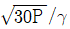
- 60P/γ
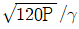
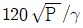
(정답률: 알수없음)
58. 내부도체의 직경 d[mm], 외부 도체의 직경 D[m], 내부의 등가비유전율 s인 경우 동축케이블에서 표피효과의 영향을 고려할 경우 고주파저항 R의 값은 주파수 f의 몇 승의 비례하는가?
- 1/2
- 2
- -1/2
- -2
(정답률: 알수없음)
59. 동조 급전선의 설명 중 틀린 것은?
- 급전선 상에 정재파를 실어 급전한다.
- 송신기와 안테나의 거리가 가까울 때 사용한다.
- 장거리 전송에도 손실이 적고 전송효율이 높다.
- 정합장치가 필요없다.
(정답률: 알수없음)
60. 자유공간(유전율=ε0, 투자율=μ0)을 속도 V[m/s]로 전파하는 전자파 E[V/m] 및 H[A/m]가 있다. 전계와 자계간의 관계식은?
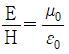
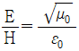
- EM=ε0μ0
- EM=√ε0μ0
(정답률: 알수없음)
4과목: 전자계산기 일반 및 무선설비기준
61. 스택(Stack) 구조와 관계되는 명령어 형식은?
- 0-주소 명령어
- 1-주소 명령어
- 2-주소 명령어
- 3-주소 명령어
(정답률: 알수없음)
62. 10진수 12.3을 2진수로 진법 변환한 것으로 가장 근사값은 어느 것인가?
- 1100.11
- 1010.010010
- 1100.010011
- 1100.010001
(정답률: 알수없음)
63. 다음 중 명령어가 해독되는 장치는?
- main storage
- ALU
- control unit
- instruction counter
(정답률: 알수없음)
64. 1개의 패리티 비트와 3개의 존 비트, 그리고 4개의 디지트 비트로 구성되는 코드체계는?
- 8421 코드
- ASCII 코드
- Hamming 코드
- EBCDIC 코드
(정답률: 64%)
65. 입출력장치와 중앙처리장치 사이에 존재하며 속도 차이로 인하여 발생하는 문제점을 해결하기 위해 고안된 것은?
- 레지스터 장치
- 어드레스 장치
- 채널제어 장치
- 단말기 장치
(정답률: 알수없음)
66. 어떤 명령이 수행되기 위해 가장 우선적으로 이루어져야하는 마이크로 오퍼레이션은 무엇인가?
- MBR ← PC
- PC ← PC+1
- IR ← MBR
- MAR ← PC
(정답률: 알수없음)
67. 정보를 기억 장치에 기억시키거나 읽어내는 명령을 한 후부터 실제로 정보가 기억 또는 읽기 시작할 때까지의 소요되는 시간을 무엇이라 하는가?
- 접근 시간(access time)
- 실행 시간(run time)
- 지연 시간(idle time)
- 탐색 시간(seek time)
(정답률: 알수없음)
68. DMA의 기능을 가장 타당하게 설명한 것은?
- 입출력을 위한 인터럽트를 최대화하여 데이터 전송을 수행한다.
- 보조기억장치의 속도차이를 해결하는 역할을 한다.
- 주변기기의 메모리 용량을 확대하는 역할을 한다.
- CPU의 개입 없이 메모리와 주변장치 사이에서 데이터 전송을 수행한다.
(정답률: 알수없음)
69. 다음 중 자기보수(Self Complement) 코드의 종류가 아닌 것은?
- 그레이 코드
- 3초과 코드
- 2421 코드
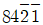
코드
(정답률: 알수없음)
70. 컴퓨터의 처리속도를 표시하는 방법으로서 가장 널리 쓰이는 단위는?
- MIPS
- MIS
- BPS
- TPS
(정답률: 알수없음)
71. 아마추어국 및 실험국의 송신설비의 공중선전력은 무엇으로 표시하는가?
- 첨두포락선 전력
- 평균 전력
- 반송파 전력
- 규격 전력
(정답률: 46%)
72. 지정된 공중선 전력을 400W로 하고 허용편차를 상한 10%, 하한 5%로 하면 전파를 발사할 경우에 허용되는 공중선전력의 범위는?
- 380W~440W
- 360W~420W
- 380W~420W
- 360W~440W
(정답률: 알수없음)
73. 전파의 형식의 표기방법에서 주반송파의 변조형식 기호가 “A" 이면 다음 중 어느 형식을 나타내는가?
- 양측파대
- 잔류측파대
- 독립측파대
- 단측파대(전반송파)
(정답률: 알수없음)
74. 전기통신기자재, 무선설비기기와 전자파장해기기 및 전자파로부터 영향을 받는 기기의 통합적인 용어로 가장 타당한 것은?
- 전기통신기기
- 정보통신기기
- 무선설비기기
- 전자파장해기기
(정답률: 알수없음)
75. 무선국의 수신설비의 충족 조건으로 맞지 않는 것은?
- 내부잡음이 적을 것
- 감도는 낮은 신호입력에서도 양호할 것
- 선택도의 범위가 적을 것
- 수신주파수는 운용범위 이내일 것
(정답률: 알수없음)
76. 전파형식 A3E를 사용하는 방송국의 공중선 전력의 표시는?
- 반송파전력
- 첨두포락선전력
- 평균전력
- 규격전력
(정답률: 알수없음)
77. 다음 중 정보통신기기인증규칙에서 인증이라는 용어의 정의에 포함되지 않는 것은?
- 형식승인
- 형식검정
- 전자파적합등록
- 전자파환경측정
(정답률: 알수없음)
78. 30MHz 초과 300MHz 이하의 주파수대 약칭은 무엇인가?
- MF
- HF
- VHF
- UHF
(정답률: 알수없음)
79. C3F, F3E, G3E 전파의 텔레비전 방송국의 무선설비에 대한 점유주파수 대역폭의 허용치는?
- 16 [kHz]
- 5 [kHz]
- 6 [MHz]
- 27 [MHz]
(정답률: 알수없음)
80. 전파연구소장은 형식검정의 신청서를 접수한 날부터 특별한 사유가 없는 한 며칠 이내에 처리해야 하는가? (단, 단서규정은 제외)
- 5일
- 7일
- 15일
- 30일
(정답률: 알수없음)